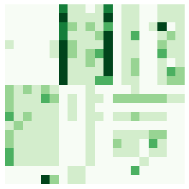

import glob
import numpy as np
import pandas as pd
import matplotlib.pyplot as plt
from ete3 import Tree, ProfileFace, TreeStyle, BarChartFace
Demo = True # Change to False if you want to run the script on the full dataset
Load and subset the dataframe of COGs#
Subset to only the reference species and WLP genes#
RefSpecies = OFOGs.loc[:, OFOGs.columns.isin(RefSpeciesList)]
RefSpecies
WLP_Genes = WLP.merge(RefSpecies, how="left", left_on="COG", right_index=True).set_index(
"COGName").drop(["GeneName", "Category", "Group", "COG"], axis=1).fillna(0)
WLP_Genes
| 1123288 | 192952 | 243232 | 264732 | 304371 | 323259 | 33035 | 339860 | 410358 | 419665 | 426368 | 456320 | 545694 | 574087 | 748727 | 903814 | 903818 | 931626 | Loki 4 | Thor | |
|---|---|---|---|---|---|---|---|---|---|---|---|---|---|---|---|---|---|---|---|---|
| COGName | ||||||||||||||||||||
| fmdC (COG2218) | 0.0 | 2.0 | 2.0 | 0.0 | 2.0 | 3.0 | 0.0 | 1.0 | 2.0 | 2.0 | 3.0 | 3.0 | 0.0 | 0.0 | 0.0 | 0.0 | 0.0 | 1.0 | 0 | 0 |
| ftr (COG2037) | 0.0 | 1.0 | 1.0 | 0.0 | 1.0 | 1.0 | 0.0 | 2.0 | 1.0 | 1.0 | 1.0 | 1.0 | 0.0 | 0.0 | 0.0 | 0.0 | 0.0 | 0.0 | 0 | 0 |
| mch (COG3252) | 0.0 | 1.0 | 1.0 | 0.0 | 2.0 | 2.0 | 0.0 | 1.0 | 1.0 | 1.0 | 1.0 | 1.0 | 0.0 | 0.0 | 0.0 | 0.0 | 0.0 | 0.0 | 0 | 0 |
| mtd (COG1927) | 0.0 | 1.0 | 1.0 | 0.0 | 1.0 | 1.0 | 0.0 | 1.0 | 1.0 | 1.0 | 1.0 | 1.0 | 0.0 | 0.0 | 0.0 | 0.0 | 0.0 | 0.0 | 0 | 0 |
| mer (COG2141) | 0.0 | 3.0 | 1.0 | 0.0 | 2.0 | 1.0 | 0.0 | 1.0 | 1.0 | 1.0 | 1.0 | 1.0 | 0.0 | 0.0 | 0.0 | 0.0 | 0.0 | 0.0 | 0 | 6 |
| mtrH (COG1962) | 1.0 | 2.0 | 1.0 | 0.0 | 1.0 | 1.0 | 0.0 | 1.0 | 1.0 | 1.0 | 1.0 | 1.0 | 0.0 | 0.0 | 0.0 | 0.0 | 0.0 | 1.0 | 0 | 2 |
| fdhA (COG3383) | 8.0 | 0.0 | 0.0 | 5.0 | 0.0 | 0.0 | 4.0 | 0.0 | 0.0 | 0.0 | 0.0 | 0.0 | 4.0 | 6.0 | 7.0 | 4.0 | 7.0 | 8.0 | 0 | 0 |
| fhs (COG2759) | 2.0 | 1.0 | 0.0 | 1.0 | 0.0 | 1.0 | 2.0 | 0.0 | 1.0 | 0.0 | 0.0 | 0.0 | 1.0 | 1.0 | 1.0 | 1.0 | 1.0 | 2.0 | 1 | 1 |
| folD (COG0190) | 1.0 | 0.0 | 0.0 | 1.0 | 0.0 | 0.0 | 1.0 | 0.0 | 0.0 | 0.0 | 0.0 | 0.0 | 1.0 | 1.0 | 1.0 | 1.0 | 1.0 | 1.0 | 1 | 1 |
| mtdA (COG0373) | 2.0 | 1.0 | 1.0 | 2.0 | 1.0 | 1.0 | 2.0 | 1.0 | 1.0 | 1.0 | 1.0 | 1.0 | 0.0 | 1.0 | 1.0 | 1.0 | 1.0 | 1.0 | 0 | 0 |
| metF (COG0685) | 3.0 | 1.0 | 0.0 | 1.0 | 0.0 | 1.0 | 1.0 | 0.0 | 0.0 | 0.0 | 0.0 | 0.0 | 1.0 | 1.0 | 1.0 | 2.0 | 3.0 | 1.0 | 0 | 0 |
| AcsE (COG1410) | 9.0 | 0.0 | 0.0 | 5.0 | 0.0 | 0.0 | 3.0 | 0.0 | 0.0 | 0.0 | 0.0 | 0.0 | 4.0 | 9.0 | 8.0 | 12.0 | 3.0 | 15.0 | 0 | 0 |
| CdhB (COG1880) | 0.0 | 2.0 | 1.0 | 0.0 | 0.0 | 1.0 | 0.0 | 0.0 | 0.0 | 2.0 | 1.0 | 0.0 | 0.0 | 0.0 | 0.0 | 0.0 | 0.0 | 0.0 | 0 | 0 |
| CdhD/AcsD (COG2069) | 1.0 | 2.0 | 1.0 | 1.0 | 0.0 | 1.0 | 1.0 | 0.0 | 0.0 | 1.0 | 1.0 | 0.0 | 1.0 | 1.0 | 1.0 | 1.0 | 1.0 | 1.0 | 0 | 0 |
| CdhE/AcsC (COG1456) | 1.0 | 2.0 | 1.0 | 2.0 | 1.0 | 2.0 | 1.0 | 0.0 | 0.0 | 1.0 | 1.0 | 0.0 | 1.0 | 2.0 | 1.0 | 3.0 | 1.0 | 1.0 | 3 | 0 |
| CooS/AcsA (COG1151) | 0.0 | 2.0 | 1.0 | 0.0 | 0.0 | 1.0 | 0.0 | 0.0 | 0.0 | 0.0 | 0.0 | 1.0 | 0.0 | 0.0 | 0.0 | 0.0 | 0.0 | 0.0 | 0 | 0 |
| CdhA (COG1152) | 0.0 | 2.0 | 2.0 | 0.0 | 0.0 | 1.0 | 1.0 | 0.0 | 0.0 | 3.0 | 1.0 | 0.0 | 0.0 | 0.0 | 0.0 | 0.0 | 0.0 | 0.0 | 0 | 0 |
| Cdhc (COG1614) | 3.0 | 2.0 | 2.0 | 1.0 | 0.0 | 1.0 | 5.0 | 0.0 | 0.0 | 1.0 | 1.0 | 0.0 | 1.0 | 1.0 | 1.0 | 1.0 | 1.0 | 2.0 | 0 | 0 |
| pta (COG0280) | 1.0 | 1.0 | 0.0 | 0.0 | 0.0 | 0.0 | 0.0 | 0.0 | 0.0 | 0.0 | 0.0 | 0.0 | 1.0 | 3.0 | 1.0 | 2.0 | 2.0 | 1.0 | 0 | 0 |
| ackA (COG0282) | 1.0 | 1.0 | 0.0 | 1.0 | 0.0 | 0.0 | 1.0 | 0.0 | 0.0 | 0.0 | 0.0 | 0.0 | 1.0 | 2.0 | 1.0 | 1.0 | 2.0 | 1.0 | 0 | 0 |
Find species names#
NCBIRefIDs = pd.read_csv("../Data/input/NCBIRefIDs.tsv",
sep="\t", comment="#", header=None)
NCBIRefIDs.columns = ["TaxID", "TaxName"]
NCBIRefIDs = NCBIRefIDs.astype(str).set_index("TaxID").iloc[:-3]
NCBIRefIDs
| TaxName | |
|---|---|
| TaxID | |
| 574087 | Acetohalobium arabaticum |
| 931626 | Acetobacterium woodii |
| 264732 | Moorella thermoacetica |
| 33035 | Blautia producta |
| 1123288 | Sporomusa ovata |
| 903814 | Eubacterium limosum |
| 748727 | Clostridium ljungdahlii |
| 545694 | Treponema primitia |
| 903818 | Holophaga foetida |
| 243232 | Methanocaldococcus jannaschii |
| 426368 | Methanococcus maripaludis |
| 192952 | Methanosarcina mazei |
| 323259 | Methanospirillum hungatei |
| 304371 | Methanocella paludicola |
| 410358 | Methanocorpusculum labreanum |
| 456320 | Methanococcus voltae |
| 419665 | Methanococcus aeolicus |
| 339860 | Methanosphaera stadtmanae |
SpeciesIndexDF = pd.read_csv("../Data/input/SpeciesIndexDF.tsv",
sep="\t", comment="#", header=0, index_col="Proteome Id")["Organism"]
SpNamesID = pd.concat([SpeciesIndexDF, NCBIRefIDs["TaxName"]])
SpNamesID
UP000324665 Thorarchaeota archaeon (strain OWC)
UP000321408 Candidatus Prometheoarchaeum syntrophicum
574087 Acetohalobium arabaticum
931626 Acetobacterium woodii
264732 Moorella thermoacetica
33035 Blautia producta
1123288 Sporomusa ovata
903814 Eubacterium limosum
748727 Clostridium ljungdahlii
545694 Treponema primitia
903818 Holophaga foetida
243232 Methanocaldococcus jannaschii
426368 Methanococcus maripaludis
192952 Methanosarcina mazei
323259 Methanospirillum hungatei
304371 Methanocella paludicola
410358 Methanocorpusculum labreanum
456320 Methanococcus voltae
419665 Methanococcus aeolicus
339860 Methanosphaera stadtmanae
dtype: object
Build the tree with feature annotation#
Manual work needed: create CombninedSpeciesTreeETE.nw made using orthofinder, NCBI ID’s are slightly different to the ones from the strains in EggNOG so that’s corrected in the .nw file.
Combined = Tree("../Data/input/CombninedSpeciesTreeETE.nw", format=1)
Combined.ladderize()
ProposedClass = pd.read_csv("../Data/input/ProposedClassification.csv",
sep=",", comment="#", header=0, index_col="UPID") # ["Organism"]
LeavesToKeep = ProposedClass[~ProposedClass.iloc[:, 0].duplicated()]
LeavesToKeep.columns = ["TaxName"]
Combined.prune(NCBIRefIDs.index.union(LeavesToKeep.index))
# Add columns to link to the count matrix
LeavesToKeep["Feature"] = LeavesToKeep["TaxName"]
NCBIRefIDs["Feature"] = NCBIRefIDs.index
# Combine into single indexing dataframe
SpNamesID = pd.concat([LeavesToKeep, NCBIRefIDs])
# Rename the Asgard leaves so that they match the median counts instead of the chosen species
for lf in Combined.iter_leaves():
if lf.name in list(LeavesToKeep.index):
lf.name = LeavesToKeep.loc[lf.name][0]
# Determined after running again, but manually keep only the species so that Asgardarchaea lacking the CODH complex are not kept.
Combined.prune(RefSpeciesList)
BranchOrder = Combined.get_leaf_names()
# Add the counts to the specific leaves of the tree and change the names from TaxID to actual names
for lf in Combined.iter_leaves():
lf.add_features(profile=WLP_Genes[lf.name].values)
lf.add_features(deviation=[0 for x in range(len(WLP_Genes))])
lf.add_face(ProfileFace(max_v=36.0, min_v=0.0, center_v=10.0, style='heatmap',
colorscheme=4, width=len(WLP_Genes)*10, height=10), column=0, position="aligned")
lf.name = SpNamesID.set_index("Feature")["TaxName"][lf.name]
description = list(WLP_Genes.index)
axisface = BarChartFace([0]*len(list(WLP_Genes.index)), width=len(WLP_Genes)
* 10, height=0, labels=list(WLP_Genes.index), max_value=1, scale_fsize=1)
ts = TreeStyle()
ts.draw_guiding_lines = True
ts.show_leaf_name = True
ts.aligned_foot.add_face(axisface, 0)
ts.show_scale = False
#Combined.render('../Data/output/heatmap.png', tree_style=ts, dpi = 75)
Combined.render("%%inline", tree_style=ts, dpi=75)
/var/folders/qr/vm827mh53sd6708z2k3_tnnrz3fj08/T/ipykernel_24869/2650320215.py:2: SettingWithCopyWarning:
A value is trying to be set on a copy of a slice from a DataFrame.
Try using .loc[row_indexer,col_indexer] = value instead
See the caveats in the documentation: https://pandas.pydata.org/pandas-docs/stable/user_guide/indexing.html#returning-a-view-versus-a-copy
LeavesToKeep["Feature"] = LeavesToKeep["TaxName"]
Plot Separately for the figure#
# made using orthofinder, NCBI ID's are slightly different to the ones from the strains in EggNOG so that's corrected in the .nw file.
Combined = Tree("../Data/input/CombninedSpeciesTreeETE.nw", format=1)
Combined.ladderize()
LeavesToKeep = ProposedClass[~ProposedClass.iloc[:, 0].duplicated()]
LeavesToKeep.columns = ["TaxName"]
Combined.prune(NCBIRefIDs.index.union(LeavesToKeep.index))
# Add columns to link to the count matrix
LeavesToKeep["Feature"] = LeavesToKeep["TaxName"]
NCBIRefIDs["Feature"] = NCBIRefIDs.index
# Combine into single indexing dataframe
SpNamesID = pd.concat([LeavesToKeep, NCBIRefIDs])
# Rename the Asgard leaves so that they match the median counts instead of the chosen species
for lf in Combined.iter_leaves():
if lf.name in list(LeavesToKeep.index):
lf.name = LeavesToKeep.loc[lf.name][0]
Combined.prune(RefSpeciesList)
BranchOrder = Combined.get_leaf_names()
# Add the counts to the specific leaves of the tree and change the names from TaxID to actual names
for lf in Combined.iter_leaves():
lf.name = SpNamesID.set_index("Feature")["TaxName"][lf.name]
description = list(WLP_Genes.index)
axisface = BarChartFace([0]*len(list(WLP_Genes.index)), width=len(WLP_Genes)
* 10, height=0, labels=list(WLP_Genes.index), max_value=1, scale_fsize=1)
ts = TreeStyle()
ts.draw_guiding_lines = True
ts.show_leaf_name = True
ts.aligned_foot.add_face(axisface, 0)
ts.scale = 20
ts.show_scale = False
#Combined.render('../Data/output/heatmap.png', tree_style=ts, dpi = 75)
Combined.render("%%inline", tree_style=ts, dpi=75)
/var/folders/qr/vm827mh53sd6708z2k3_tnnrz3fj08/T/ipykernel_24869/3967582564.py:9: SettingWithCopyWarning:
A value is trying to be set on a copy of a slice from a DataFrame.
Try using .loc[row_indexer,col_indexer] = value instead
See the caveats in the documentation: https://pandas.pydata.org/pandas-docs/stable/user_guide/indexing.html#returning-a-view-versus-a-copy
LeavesToKeep["Feature"] = LeavesToKeep["TaxName"]
plt.imshow(WLP_Genes.loc[WLP.COGName[WLP.Category == "Metabolic"]
].T.loc[BranchOrder], cmap='Greens', interpolation='nearest', vmin=0, vmax=5)
plt.axis('off')
plt.show()
